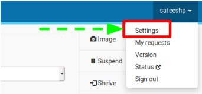
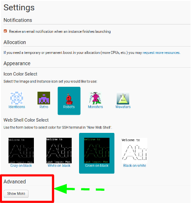
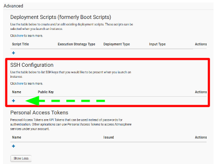
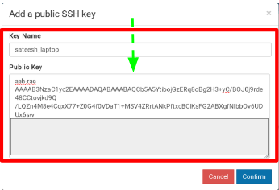

An Atmosphere instance only contains data that were included in the original image that was used to make that instance. You can transfer data to/from the CyVerse Data Store, an Atmosphere Volume, a sever, or your local machine.
iCommands is installed on every Atmosphere instance by default
iinit command and enter configure.Note: This configuration is a one-time step on your first use with this instance.
$ iinit
# As prompted, enter the following values:
$ **Host: data.cyverse.org**
$ **Port: 1247**
$ **User: your_cyverse_username**
$ **Zone: iplant**
$ **Password: your_cyverse_password**
If you make a mistake in your configuration you can edit~/.irods/irods_environment.jsonon your instance.
$ ils
$ iget data_store_file
$ iget file_on_instance location_on_data_store
iCommands has a variety of options, to see progress of transfers, operate recursively, and more. See additional iCommands documentation on the CyVerse wiki.
cd /opt
sudo su
curl -O -L https://repo.continuum.io/miniconda/Miniconda3-latest-Linux-x86_64.sh
bash Miniconda3-latest-Linux-x86_64.sh #install in /opt/miniconda3
echo export PATH=$PATH:/opt/miniconda3/bin >> ~/.bashrc
source ~/.bashrc
conda config --add channels defaults
conda config --add channels conda-forge
conda config --add channels bioconda
conda install -y fastqc multiqc trimmomatic trinity time salmon
apt-get install tree sl
apt-get update && sudo apt-get -y install gdebi-core r-base
wget https://download2.rstudio.org/rstudio-server-1.1.463-amd64.deb
gdebi -n rstudio-server-1.1.463-amd64.deb
RSTUDIO_LATEST=$(wget --no-check-certificate -qO- https://s3.amazonaws.com/rstudio-server/current.ver)
echo http://$(hostname):8787/
$ ssh-keygen -t rsa
$ Enter file in which to save the key (/home/demo/.ssh/id_rsa):
$ Enter passphrase (empty for no passphrase):
$ cat ~/.ssh/id_rsa.pub




@@@@@@@@@@@@@@@@@@@@@@@@@@@@@@@@@@@@@@@@@@@@@@@@@@@@@@@@@@@
@ WARNING: REMOTE HOST IDENTIFICATION HAS CHANGED! @
@@@@@@@@@@@@@@@@@@@@@@@@@@@@@@@@@@@@@@@@@@@@@@@@@@@@@@@@@@@
IT IS POSSIBLE THAT SOMEONE IS DOING SOMETHING NASTY!
Someone could be eavesdropping on you right now (man-in-the-middle attack)!
It is also possible that a host key has just been changed.
The fingerprint for the ECDSA key sent by the remote host is
SHA256:6vr1EYq1C1DJnWEoE9k2gfbaXUhsEM2iF9jKuhfNs2o.
Please contact your system administrator.
Add correct host key in /home/sateeshp/.ssh/known_hosts to get rid of this message.
Offending ECDSA key in /home/sateeshp/.ssh/known_hosts:9
remove with:
ssh-keygen -f "/home/sateeshp/.ssh/known_hosts" -R "128.196.142.26"
ECDSA host key for 128.196.142.26 has changed and you have requested strict checking.
Host key verification failed.